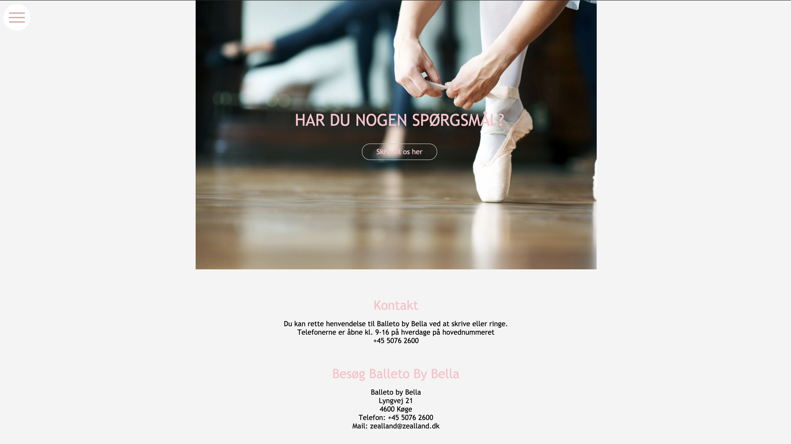

Her ser man min anden hjemmeside, hvor vi havde til opgave at lave en hjemmeside for en danseskole. Jeg stod for at lave kontaktsiden igen, eftersom jeg havde bedst styr på det og havde en masse forbedringer fra første projekt. Jeg syntes selv det blev en god side, men jeg ville gerne udfordres noget mere.
Detaljer
Dette er et 4 ugers temaforløb, der består af to dele (to gange to
uger). I del 1 af temaprojektet er der særlig fokus på
designprocessen og udviklingen af digitale produkter til specifikke
brugersegmenter. Vi har produceret et website for en danseskole, der
er målrettet et specifikt brugersegment. Vi har ydermere gjort vores
projekt klar til overlevering til en anden gruppe, da der i del 2
skulle tages udgangspunkt i en anden gruppes arbejde. Vi havde tænkt
over, hvordan vi, i vores Google Doc har formidlet vores designvalg.
De designvalg vi løbende har truffet var bundet i vores research og
personaer.
Projekt
Del 1:
Website kodet I HTML og CSS (mobile)
Målgruppe definition 2-3
personaer
Del 2:
Prototype i HTML og CSS (desktop)
Funktionel på mobile enheder
og i forskellige browsere.
Kommentarer i koden.
Design
thinking processen Præsentationsmoodboard
Klient
Del 1:
Balleto - Danseskole
Del 2:
Danceline - Danseskole
Dato
Del 1:
Torsdag d. 24. september 2020
Del 2:
Onsdag d. 7. oktober 2020

Vi har selvfølgelig også lave sketches denne gang, men her blev introduceret til programet adope xd. Her kunne vi lave vores sketches i langt bedre kvalitet, og vi holdt os også langt mere til vores sketches denne gang, end hvad vi gjorde første gang. Det fungerede rigtig godt, og det flittigt brugt.
I denne opgave skulle vi bytte halvvejs igennem, så vi endte med at viderudvikle på en anden hjemmeside, der omhandlede linedance. Her stod jeg for forsiden, hvilket jeg syntes var rigtig fedt. Der er lidt mere at give i sig i kast med, når man laver en forside og det var klart en udfordring. Det var derfor en meget sjov udfordring, når nu vi skulle tage udgangspunkt i en anden gruppe hjemmeside.

Vi blev også introduceret til moodboard i dette projekt, der skal vise hvilken “stemning” hjemmesiden skal have. Her finder man passende billeder og viser hvilke farver der skal bruges samt hvilken tekstfont, der bruges på hjemmesiden.